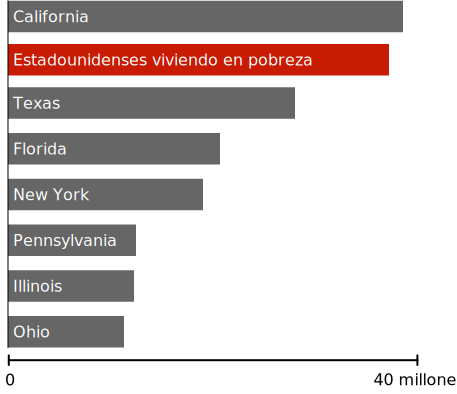

Riqueza vista a escala
$1,000
$63,179 (Ingreso familiar promedio en EEUU)
$1 millón
$1 millardo (mil millones)
$139 millardos (riqueza de Jeff Bezos)
Es broma, apenas estamos a ⅓ del camino. Pero sigue avanzando, hay más que ver.
Hasta las fortunas de gente muy rica son eclipsadas por la riqueza incomprensible del 0.0001%.
Estas personas quizás se vean a sí mismas como fabulosamente ricas, y a menudo se oponen a políticas que buscan reducir la desigualdad.
Pero muchos no han comprendido completamente la enorme brecha entre ellos y los súper ricos.
Podemos tener un mundo en el que exista gente rica, sin entregar casi todo el dinero a los súper ricos.
Ningún ser humano necesita o merece tanta riqueza.
400 Estadounidenses más ricos ($2.96 billones)
Un billón de dólares es una cifra tan grande que bien podrías decir "tropecientos zillones de dólares." Así que, en esta sección, trataremos de comprender la escala de esta cifra observando lo que se podría lograr con varias fracciones de esta riqueza.
Mientras avanzamos, trata de recordar: toda esta riqueza es controlada por un grupo tan pequeño que podría llenar un solo avión 747—con 260 asientos de sobra.
¿Qué podríamos hacer con el 3% de este dinero?
Testar a todos los Estadounidenses por Coronavirus
Al momento de esta publicación, los tests en los Estados Unidos están muy lejos de lo necesario para reabrir la economía. Según algunas estimaciones, aumentar los tests hasta unos 30 millones por semana costaría alrededor de $100 millardos en total, o alrededor del 3% de la riqueza controlada actualmente por los 400 estadounidenses más ricos.
Erradicar la Malaria Permanentemente
La malaria es una de las peores enfermedades infecciosas que jamás ha afligido a la humanidad, matando posiblemente a más personas que cualquier otra en la historia. Solo en el siglo XX, la malaria mató a más personas que la Peste Negra.
El coronavirus nos ha mostrado a todos los horrores de vivir con una enfermedad mortal. Lamentablemente, para gran parte del mundo, este horror era una constante de la vida diaria incluso antes del coronavirus.
Todas estas muertes son prevenibles. El tratamiento y la prevención de la malaria es ciencia bien entendida, practicada universalmente en el mundo desarrollado.
Se estima que la malaria podría erradicarse globalmente en el 2030 por un coste cercano a $1.84 por persona en riesgo por año, o alrededor de $100 millardos en total. Esto representa cerca del 3% de la riqueza que actualmente poseen los 400 estadounidenses más ricos.
Alrededor de 800 niños morirán de malaria hoy. Un pequeño grupo de personas súper ricas podría detenerla por una suma de dinero tan pequeña que probablemente ni siquiera notarían su ausencia. Pero eligen no hacerlo.
¿Qué podríamos hacer con 5% de este dinero?
Entregar $1,200 a cada hogar Estadounidense.
El reciente estímulo por coronavirus fue el más grande jamás aprobado por el Congreso. Fue financiado totalmente a través de gasto deficitario, que será pagado por los contribuyentes por generaciones. La carga de devolver esta deuda podría borrarse en un instante con un impuesto a los súper ricos tan pequeño que ni siquiera lo sentirían.
La riqueza de 400 estadounidenses podría haber financiado toda la ley CARES, incluidos los rescates corporativos, el aumento del pago de desempleo, y expansión de tests — con casi un billón de dólares de sobra.
En cambio, los contribuyentes Estadounidenses se quedan con la cuenta.
Sacar a todos los Estadounidenses de la pobreza.
Población de Estados comparados a la pobreza, 2019
Cada persona en Estados Unidos podría salir de la pobreza con un subsidio único en efectivo de cerca de $10,000 por familia empobrecida (y cerca de $7,000 para personas empobrecidas). El costo total sería de $170 millardos, un poco más del 5% de la riqueza actualmente controlada por 400 individuos.
Puede parecer ilógico que un subsidio único pueda tener un impacto duradero en la pobreza crónica. Pero una de las sorprendentes verdades de la pobreza es que es fluida. Los Estadounidenses entran y salen de la pobreza muchas veces durante su vida, y un buen año puede tener un efecto masivo y duradero.
Actualmente, una gran cantidad de datos respalda la idea de que una única transferencia en efectivo puede transformar permanentemente una economía local. Al recibir una ganancia inesperada, la gente invierte en su futuro. Vuelven a la escuela, obtienen transporte, pagan cuidado de niños, liquidan deudas debilitantes y hacen todo tipo de cosas para mejorar su panorama profesional y su futuro financiero.
En Estados Unidos, por toda la gente que escapa de la pobreza en cualquier año, cerca de la mitad se mantiene fuera de la pobreza durante al menos los siguientes cinco años. Cerca de un tercio aún siguen fuera de la pobreza diez años después.
Esta no sería una solución permanente para todos. Seguramente, algunos regresarían rápidamente a la pobreza, y otros enfrentan deudas tan grandes que el subsidio haría poca diferencia. Pero para decenas de millones de Estadounidenses, este sería un evento que les cambiaría la vida. Sería un programa social que definiría una generación que remodelaría nuestra economía por décadas.
¿Qué podríamos hacer con 6% de este dinero?
Devolución de los impuestos del 2018 a hogares con ganancias menores de $80,000
En 2018, el ingreso fiscal por impuestos de todos los hogares Estadounidenses que ganan menos de $80,000 al año combinados fue alrededor de $200 millardos. Este dinero—tomado enteramente de Estadounidenses pobres y de clase media—podría ser devuelto por una pequeña fracción de la riqueza controlada por el .0001%.
¿Qué podríamos hacer con 8% de este dinero?
Proveer de agua potable y acceso a inodoros a cada humano en la tierra.
Cerca de 844 millones de personas no tienen acceso a agua limpia de ningún tipo. Casi el mismo número no tiene acceso a un inodoro o letrina de ningún tipo y, por lo tanto, defeca al aire libre.

Sin agua limpia
El agua contaminada es una gran fuente de enfermedades, como el cólera, la disentería, y la fiebre tifoidea. Se estima que el agua contaminada mata cerca de 829,000 personas cada año, haciéndola una de las mayores asesinas del mundo. El coste de proveer agua limpia y eliminación de deshechos para todos en el mundo sería de $240 millardos, o el 8% de la riqueza controlada por los 400 Estadounidenses más ricos.
¿Qué podríamos hacer con 40% de este dinero?
Dar $10,000 a cada hogar Estadounidense
A medida que los Estadounidenses debaten cómo y cuándo abrir la economía después del coronavirus, con frecuencia nos encontramos con una decisión aparentemente imposible entre arriesgar millones de vidas o caer en una gran depresión debido al continuado cierre. Esta es una repugnante mentira.
El dinero para superar esta tormenta mientras la cuarentena se mantiene existe, solo es cuestión de encontrar la voluntad política para tomarlo.